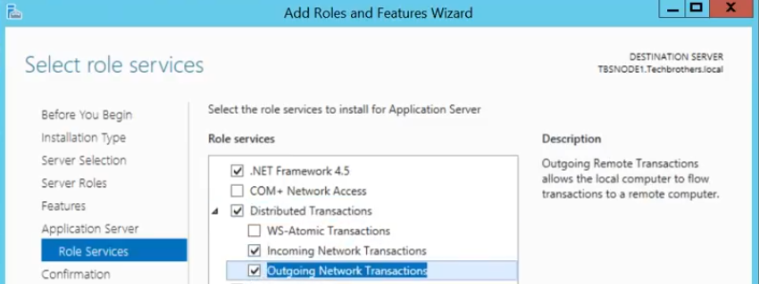
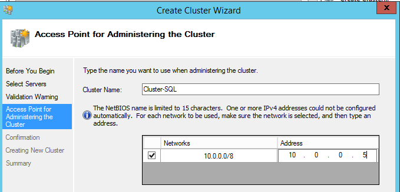
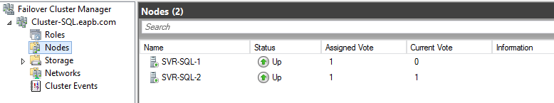
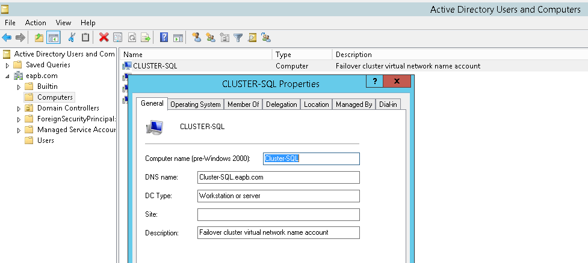

Network Settings Configuration
- Go to Network and Sharing Center > Change Adapter Settings. Configure 2 networks.
- For each network, right-click then select Properties. On the Networking tab, select IPv4 and select Properties. Configure the static IP address.
Service Account Configuration
The user account that will be used to create the cluster must be a member of Domain Admins group.
Windows Role and Function
- On each node, open Server Manager, select Add Roles and Features.
- Installation Type – Select "Role-based or feature-based installation".
- Server Selection – Select a server or a virtual hard disk on which to install roles and features.
- Server Roles – Select Application Server (Distribution Transaction is part of this role). Installing MSDTC for SQL Server 2008 and later is optional since if it it not installed, local MSDTC will be used instead.
- Features – Select .NET Framework 3.5 Features and Failover Clustering.
- Role Services – Select Incoming Networking Transactions and Outgoing Network Transactions. 
- Confirmation – To have no problem installing .NET Framework 3.5, specify the source path directly from the installation media. When this happens, select "Specify an alternate source path". Mount the Windows Server installation media to specify "E:\Sources\SxS\".
- Finish the wizard.
Validating the Nodes
Validate a cluster configuration whenever there are new/additional/removal of resources/node from cluster and/or if there are network setting changes.
- Open Failover Cluster Manager on any of the node that will participate in the cluster. Right-click on the Failover Cluster Manager and select Validate Configuration.
- Select Servers or a Cluster – Add all the nodes that will participate in the cluster.
- Testing Options – Choose between running all tests or running selected tests.
- Test Selection – If "Run only tests I select" is selected, in this page, select the tests that you want to run.
- Finish the wizard and then review the report.
Creating the Cluster
- Access Point for Administering the Cluster – Provide the cluster name and cluster IP address. 
- Verification  